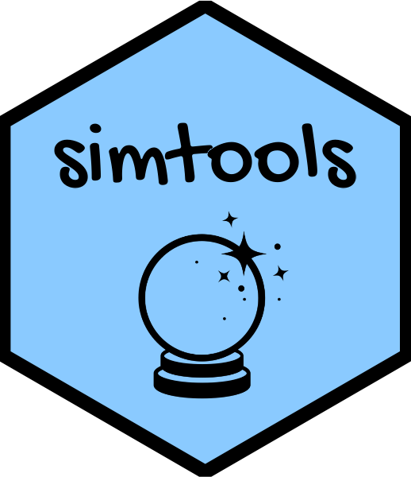
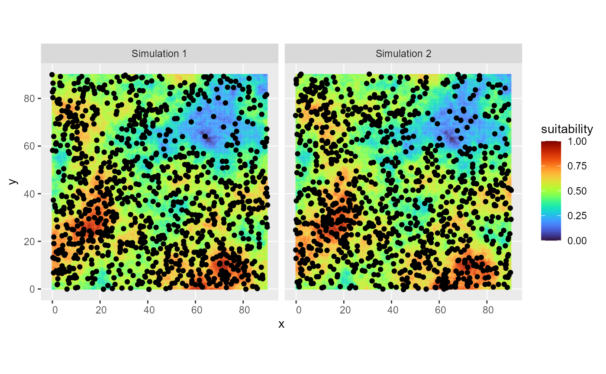
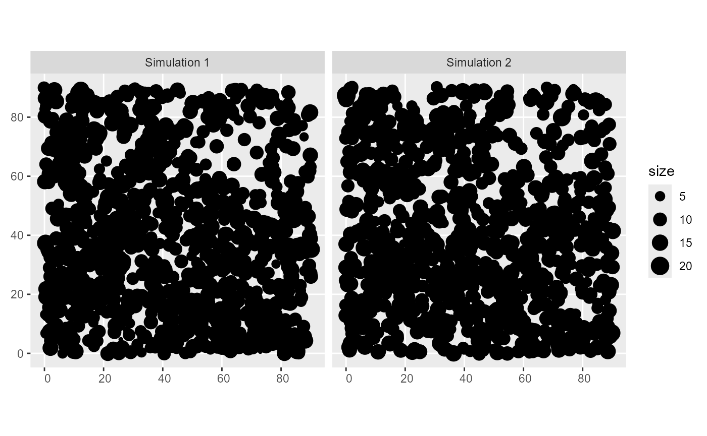

Simulate virtual species
simulate-virtual-species.Rmd
library(simtools)Create a custom projection
The upcoming analyses necessitates working in a projected
environment. Because we are in a virtual environment, we must define a
custom projection. This is what does custom_proj().
custom_proj()
#> Coordinate Reference System:
#> User input: PROJCS["Ad_hoc_handy_wkt2_template_for_laea",
#> GEOGCS["WGS 84",
#> DATUM["WGS_1984",
#> SPHEROID["WGS 84",6378137,298.257223563]],
#> PRIMEM["Greenwich",0],
#> UNIT["Degree",0.0174532925199433]],
#> PROJECTION["Lambert_Azimuthal_Equal_Area"],
#> PARAMETER["latitude_of_center",0],
#> PARAMETER["longitude_of_center",0],
#> PARAMETER["false_easting",0],
#> PARAMETER["false_northing",0],
#> UNIT["metre",1]]
#> wkt:
#> PROJCRS["Ad_hoc_handy_wkt2_template_for_laea",
#> BASEGEOGCRS["WGS 84",
#> DATUM["World Geodetic System 1984",
#> ELLIPSOID["WGS 84",6378137,298.257223563,
#> LENGTHUNIT["metre",1,
#> ID["EPSG",9001]]]],
#> PRIMEM["Greenwich",0,
#> ANGLEUNIT["Degree",0.0174532925199433]]],
#> CONVERSION["unnamed",
#> METHOD["Lambert Azimuthal Equal Area",
#> ID["EPSG",9820]],
#> PARAMETER["Latitude of natural origin",0,
#> ANGLEUNIT["Degree",0.0174532925199433],
#> ID["EPSG",8801]],
#> PARAMETER["Longitude of natural origin",0,
#> ANGLEUNIT["Degree",0.0174532925199433],
#> ID["EPSG",8802]],
#> PARAMETER["False easting",0,
#> LENGTHUNIT["metre",1],
#> ID["EPSG",8806]],
#> PARAMETER["False northing",0,
#> LENGTHUNIT["metre",1],
#> ID["EPSG",8807]]],
#> CS[Cartesian,2],
#> AXIS["(E)",east,
#> ORDER[1],
#> LENGTHUNIT["metre",1]],
#> AXIS["(N)",north,
#> ORDER[2],
#> LENGTHUNIT["metre",1]]]Simulate spatial point process
simul_spat() generates a spatial point process from a
reference map, using Inhomogeneous Poisson Point Process with spatstat’s
IPP. The intensity of the process is proportional to this reference map,
and the final number of simulated points is provided by N. Several runs
can be simulated at the same time. A mark can be associated with each
point to define the group size of each sighting (with the
mean_group_size parameter).
To do : add an id to each generated obs (only done when n_sim = 1)
grid <- create_grid()
cdt <- generate_env_layer(grid = grid)
#> [using unconditional Gaussian simulation]
rsce <- generate_resource_layer(env_layers = cdt$rasters,
beta = c(2, -1.5))
# issue a warning: we are in a virtual env and ref_map has no crs
out <- simul_spat(ref_map = rsce$rasters, n_sim = 2,
return_wgs_coordinates = FALSE, N = 1000, mean_group_size = 10)
#> Warning in simul_spat(ref_map = rsce$rasters, n_sim = 2, return_wgs_coordinates
#> = FALSE, : ref_map has no crs, is that voluntary? The output will have no crs.
# plot the simulated distribution
ggplot2::ggplot(out) +
ggplot2::geom_tile(data = rsce$dataframe, ggplot2::aes(x = x, y = y, fill = suitability)) +
ggplot2::geom_sf() + ggplot2::facet_wrap("name") +
viridis::scale_fill_viridis(option = "H")
# check the generated group size
ggplot2::ggplot(out) +
ggplot2::geom_sf(ggplot2::aes(size = size)) + ggplot2::facet_wrap("name") 